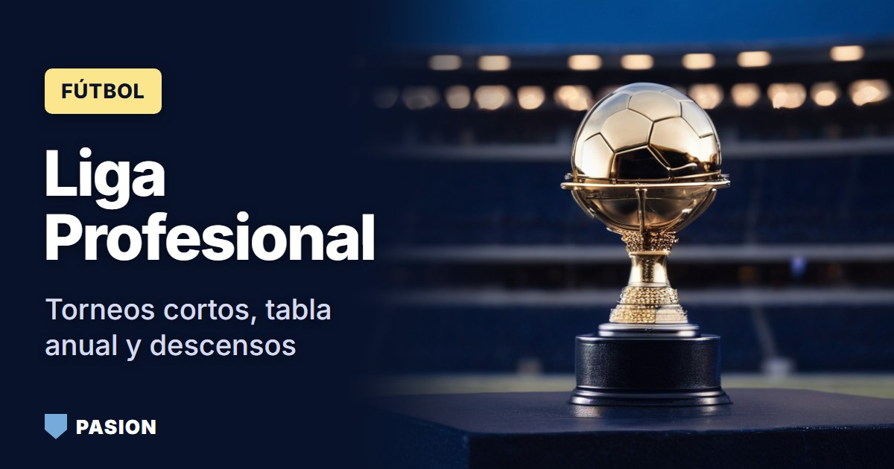

Cómo funciona la Liga Profesional: Apertura, Clausura, playoffs y qué vale cada posición
Dos torneos, 30 clubes y playoffs a partido único: mirá cómo la Liga Profesional define a sus campeones, las copas y los descensos.

Dos torneos, 30 clubes y playoffs a partido único: mirá cómo la Liga Profesional define a sus campeones, las copas y los descensos.

Fases previas, grupos y final única: el camino hasta la Libertadores, cómo clasifican los argentinos y los 25 títulos de sus clubes.

Del proveedor técnico al nombre del estadio: cómo funciona el patrocinio en el fútbol argentino y qué acuerdos hay hoy en Boca, River, la Selección y la Liga.
¿Quién le vende el partido a la TV? Mirá cómo pasó el fútbol argentino de Fútbol para Todos a TNT Sports y ESPN, y qué dice la ley sobre los partidos de la Selección.

¿Tu club puede volverse sociedad anónima? Mirá qué habilitó el DNU 70/2023, por qué una cautelar frena la reglamentación y qué dice la AFA.

Botón de arrepentimiento, derecho de admisión, reventa y partido suspendido: qué dice la ley cuando comprás una entrada para la cancha.
Falsos soportes, entradas y camisetas truchas, alias engañosos: cómo protegerte y qué hacer si transferiste dinero a un estafador.
Escribile a la redacción. Leemos todos los mensajes y corregimos lo que esté mal.
Hablá con la redacción